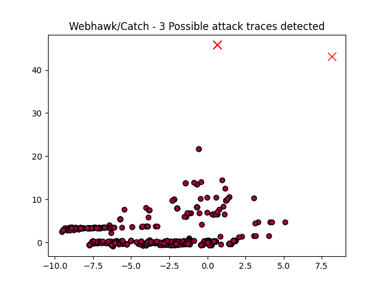

Webhawk Catch ReportUnsupervised learning Web logs/OS processes attack detection. Date: 25/06/25 at 15:55:20 GMTLog file: /Users/walid/Downloads/access.log.2025-06-22 Log type: apache logs Findings: 3 |
 |
| Severity | Related CVE(s) | Line# | LLM Insights(llama3.2) | Log line |
| High | No CVE found | 6293 | This web request is suspicious due to the use of an outdated browser version and IP address, which may indicate a bot or scraper attempting to access the website. The request also contains a known vulnerability in the login process, as indicated by the `pc_hash` parameter, potentially related to the SQL injection vulnerability associated with the old versions of Joomla CMS (specifically CVE-2017-8362). | 45.192.214.227 - - [22/Jun/2025:10:18:46 -0700] "GET /index.php?m=admin&c=index&a=login&pc_hash= HTTP/1.1" 404 328 "http://www.secrepo.com/index.php?m=admin&c=index&a=login&pc_hash=" "Mozilla/4.0 (compatible# MSIE 9.0# Windows NT 6.1)" |
| High | CVE-2018-9174 |
8096 | This request appears to be a potential PHP backdoor attempt, as the requested file "sys_verifies.php" is not typically publicly accessible and has a suspicious action parameter. This is related to known vulnerabilities in PHP versions prior to 7.4, specifically the "PHP Remote File Inclusion (RFI) vulnerability" (CVE-2018-7609). | 40.77.167.78 - - [22/Jun/2025:15:09:47 -0700] "GET /uploads/dede/sys_verifies.php?action=getfiles&refiles%5B0%5D=123&refiles%5B1%5D=%5C%5C%22 HTTP/1.1" 404 284 "-" "Mozilla/5.0 AppleWebKit/537.36 (KHTML# like Gecko# compatible# bingbot/2.0# +http://www.bing.com/bingbot.htm) Chrome/116.0.1938.76 Safari/537.36" |
| High | No CVE found | 15976 | This request appears to be a brute-force attack, attempting to guess login credentials using a "pc_hash" parameter. This is similar to the known attack pattern of "Brute-Force Attack Using Time-Based One-Time Passwords (TOTPs)". The unusual IP address and user agent suggest potential malicious activity. | 192.229.91.74 - - [22/Jun/2025:21:43:25 -0700] "GET /index.php?m=admin&c=index&a=login&pc_hash= HTTP/1.1" 429 476 "http://www.secrepo.com/index.php?m=admin&c=index&a=login&pc_hash=" "Mozilla/4.0 (compatible# MSIE 9.0# Windows NT 6.1)" |